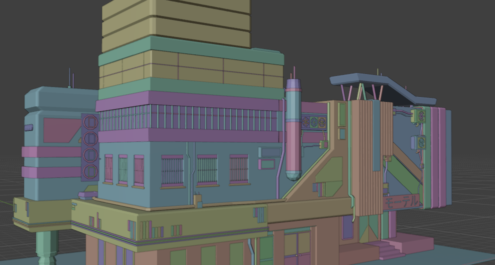
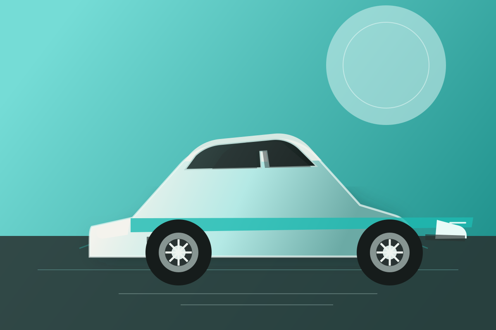
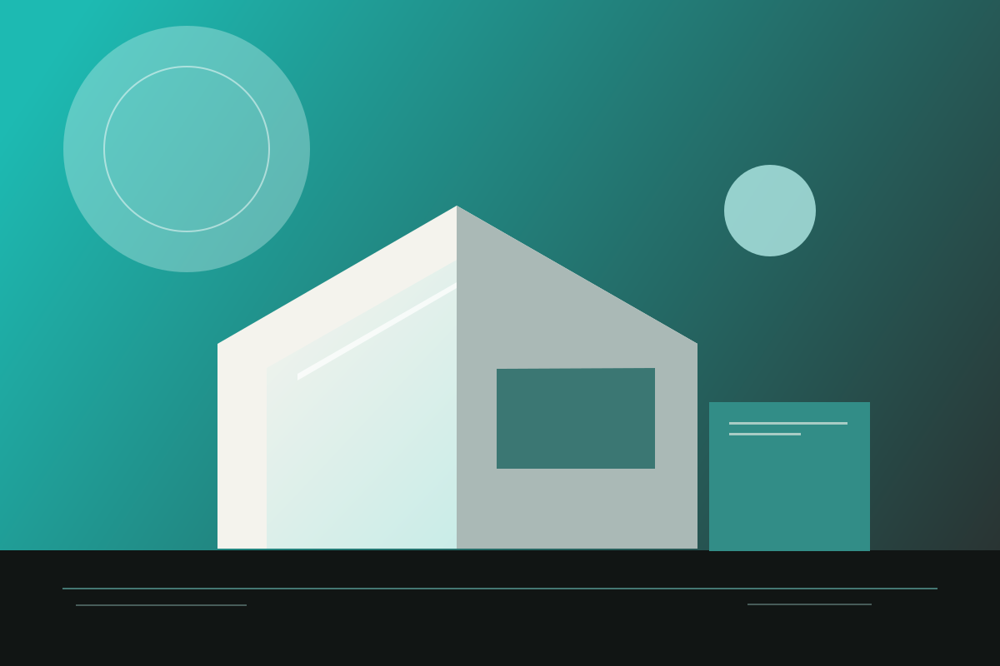

PROJECT 01 / ENVIRONMENT
Cyberpunk
city.
A neon-soaked city after dark. Low-poly shapes, tiny details, and a world waiting around every corner.
EXPLORE PROJECT 01 / 04
VIEW PROJECT SCROLL TO EXPLOREPROJECT 01 / ENVIRONMENT
A neon-soaked city after dark. Low-poly shapes, tiny details, and a world waiting around every corner.
EXPLORE PROJECT 01 / 04
VIEW PROJECT SCROLL TO EXPLOREPROJECT 02 / PRODUCT STUDY
A familiar console, reimagined in soft shapes and warm materials. A little nostalgia, rendered by hand.
EXPLORE PROJECT 02 / 04 VIEW PROJECT
SCROLL TO EXPLORE
VIEW PROJECT
SCROLL TO EXPLORE
PROJECT 03 / FORM STUDY
A playful study in simple geometry, crisp reflections, and the details that give a classic car its character.
WORK IN PROGRESS 03 / 04
WORK IN PROGRESSPROJECT 04 / IN THE MAKING
One more little world is on its way. Check back soon to see what’s next.
ASK ME WHAT’S NEXT 04 / 04
SOMETHING NEW IS TAKING SHAPE